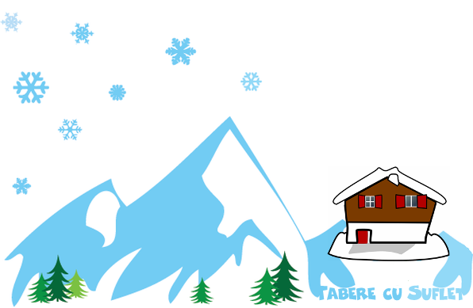
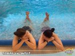
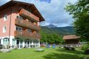
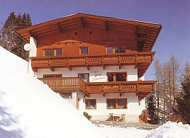
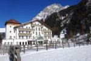
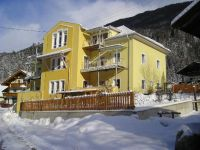
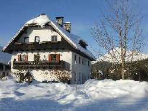

/ Tabere Schi si Snowboard / Cazare in Alpi
/ Tabere Schi si Snowboard / Cazare in Alpi


Stam la Hotel Alpen Parks Ferienresort 4*, situat într-un cadru idilic, la nici 50 m de telecabina! Daca este zapada putem schia pana la usa hotelului:)
Aici vom beneficia de tot confortul, hotelul avand lift, WiFi, o cameră de joacă pentru copii, spațiu pentru echipamentul de schi si snowboard, precum si o zonă de SPA de 400 m² cu piscină încălzită în aer liber, piscină pentru copii mici, jacuzzi și o zonă de saună cu baie de aburi, saună bio și cameră de relaxare.
Vezi unde schiem
{kind=link}

Stam la Hotel Nardi (Carisolo), o cladire noua cu apartamente de 2-4 paturi, situata intr-o zona linistita, cu o priveliste foarte frumoasa. La parter se afla o camera pentru depozitarea echipamentului sportiv si o camera de joaca. Loris, gazda noastra, ne va pregati micul dejun si cina, iar pranzul il vom lua pe partie.
Vezi unde schiem
{kind=link}

Stam la Haus Grunberg, o pensiune cocheta din Finkenberg, nu departe de Mayerhofen.
Pensiunea se afla chiar langa telegondola:)
Are apartamente de 2, 3 sau 4 paturi, cu baie si televizor.
La parter se afla o camera pentru depozitarea echipamentului sportiv si o camera de joaca.
Cami ne va pregati micul dejun si cina, iar la pranz vom avea sandwich-uri si ceai pe partie.
Vezi unde schiem
{kind=link}

Stam la Hotel Tia Monte 3*, in camere de 2 sau 3 paturi, cu baie proprie si televizor. La parter se afla o camera pentru depozitarea echipamentului sportiv si o camera darnica, pentru jocuri. De asemene, hotelul are un generos centru Spa.
Cazarea este cu demipensiune, micul dejun si cina fiind sub forma de bufet. La pranz vom manca pe partie pentru a putea schia cat mai mult.
Hotelul se afla la poarta de intrare in Parcul Natural Kaunergrat si la 50 m de statia de skibus. Ghetarul Kaunertal se afla intr-o arie protejata unde nu se pot construi hoteluri sau alte unitati de cazare. Hotelul in care stam este cel mai aproape de domeniul schiabil.
Vezi unde schiem
{kind=link}

Cazarea este la Frau Anita, o pensiune cocheta din Flatach, cu apartamente de 2-4 paturi, cu baie si televizor. La parter se afla o camera pentru depozitarea echipamentului sportiv si o camera de joaca.
Pensiunea se afla la 2 minute de statia de ski buss.
Dimineata si seara vom manca la pensiune iar la pranzul vom avea o gustare pe partie.
Vezi unde schiem
{kind=link}

Cazarea este la Casă rustică Musikantenwirt - o pensiune deosebit de frumoasa, din centrul statiunii Annaberg im Lammertal. Vom sta in camere de 2 sau 3 paturi, cu baie proprie si televizor. La parter se afla o camera pentru depozitarea echipamentului sportiv si o camera pentru jocuri.
Pensiunea are un restaurant unde vom lua micul dejun si cina sub forma de bufet. La pranz vom manca pe partie pentru a putea schia cat mai mult.
Telecabina este la o distanta de 200 m, iar pentru cei comozi exista si o statie de autobuz la 50 m.
Vezi unde schiem
{kind=link}